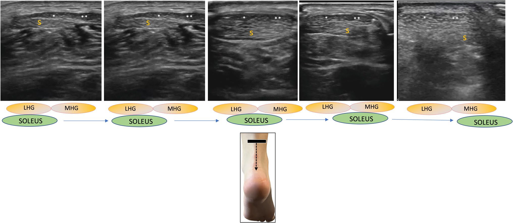

Respuesta clínica corta
¿Por qué el tendón de Aquiles no siempre parece una estructura uniforme?
Porque integra fascículos de gastrocnemio medial, gastrocnemio lateral y sóleo que se cruzan y cambian de posición hacia el calcáneo.
Dato clave12–18 MHz · eje corto dinámico · patrón tripartito
El tendón de Aquiles puede mostrar dos componentes en eje largo y tres en eje corto, con fascículos del gastrocnemio y sóleo que cambian de relación al descender; este mapa mejora la orientación, pero no valida diagnósticos fasciculares ni rehabilitación selectiva.
Observado
Qué encontró y cómo interpretarlo
El ensayo propone un patrón bipartito en eje largo y tripartito en eje corto, con variación de ecogenicidad ligada en parte a anisotropía y orientación.
La secuencia visual es rica, pero no se informa cuántas personas fueron exploradas, cómo se seleccionaron las imágenes ni con qué frecuencia aparecen variantes.
Las asociaciones entre fascículos, patología y posibles tratamientos se apoyan en anatomía y referencias previas, no en un estudio pronóstico o terapéutico.
No se midieron fiabilidad entre evaluadores, precisión frente a resonancia o disección, ni curva de aprendizaje.
Atlas del artículo
Imágenes para entender el procedimiento
Estas figuras proceden del artículo original y se reproducen con licencia abierta verificada. Se muestran por su utilidad anatómica o técnica, no como prueba aislada de diagnóstico o eficacia.

Cinco cortes consecutivos muestran cómo cambia la relación entre los fascículos de gastrocnemio lateral, gastrocnemio medial y sóleo.
Cómo leerlaLa secuencia ilustra anatomía seleccionada y no establece qué apariencia es patológica ni qué fascículo origina síntomas.
Massimo SS et al., figura 6 del artículo original · Fuente · Licencia CC BY.
Procedimiento del artículo
Recorrido dinámico de los fascículos del tendón de Aquiles
La propuesta utiliza alta frecuencia, decúbito prono y un barrido proximal-distal. El eje largo ayuda a ver el septo entre componentes superficiales y profundos; el eje corto permite seguir la disposición tripartita y su rotación.
- Posición
- Decúbito prono con el pie fuera del borde de la camilla
- Transductor
- Lineal de alta frecuencia, 12–18 MHz
- Eje largo
- Aspecto bipartito con un fino septo central hiperecogénico
- Eje corto
- Dos fascículos superficiales del gastrocnemio y uno profundo del sóleo
- 01
Empezar proximal
Se identifica la contribución del tríceps sural con el pie libre y se ajusta el haz para reducir anisotropía.
- Referencias
- Gastrocnemio medial, gastrocnemio lateral, sóleo y unión miotendinosa.
- Lectura
- La orientación oblicua diferente de cada fascículo puede cambiar su ecogenicidad sin implicar lesión.
- 02
Seguir en eje corto
Se desliza el transductor de proximal a distal manteniendo el corte axial y observando cómo cambian las tres contribuciones.
- Referencias
- Dos componentes superficiales y componente profundo del sóleo.
- Lectura
- La frontera entre las dos cabezas del gastrocnemio puede ser poco visible, mientras el sóleo suele verse más ecogénico.
- 03
Comprobar en eje largo
Se rota el transductor para seguir las fibras longitudinales y reconocer el septo que separa componente superficial y profundo.
- Referencias
- Paratendón, septo intratendinoso, fascículos del gastrocnemio y del sóleo.
- Lectura
- La duplicación del peritendón y las inserciones separadas son variantes descritas, no necesariamente patología.
- 04
Llegar a la inserción
Se continúa hasta el calcáneo y se correlacionan dirección fascicular, inserciones y movimiento durante flexión plantar.
- Referencias
- Tuberosidad calcánea, bursa retrocalcánea, grasa de Kager y entesis.
- Lectura
- Los fascículos se cruzan y no conservan una trayectoria recta independiente desde músculo hasta inserción.
Secuencia reconstruida a partir del apartado de anatomía ecográfica y de las figuras dinámicas. Sirve como orientación sonoanatómica y no como protocolo diagnóstico validado.
Aplicabilidad
Qué significa clínicamente
Recorrer el tendón en ambos planos evita interpretar una única imagen estática como representación de toda la estructura.
Corregir anisotropía antes de atribuir hipoecogenicidad a patología es especialmente importante cuando los fascículos tienen orientaciones diferentes.
Reconocer sóleo accesorio, inserciones separadas y duplicación del peritendón puede prevenir falsas etiquetas.
La distribución fascicular puede documentarse como contexto anatómico, sin convertirla en indicación automática de tratamiento selectivo.
Límite
Qué no permite afirmar
No hay cohorte definida, denominadores ni estimaciones de frecuencia.
Las imágenes son ejemplos seleccionados y pueden sobrerrepresentar patrones claros.
No se evaluó precisión diagnóstica, reproducibilidad ni relación con síntomas.
Las implicaciones terapéuticas son hipótesis y no resultados de intervención.
Contexto
¿Se parece a tu paciente?
- Población estudiada
- El artículo presenta imágenes anatómicas normales, variantes y ejemplos patológicos sin describir una cohorte consecutiva, tamaño muestral ni proceso de validación diagnóstica.
- Diseño
- Ensayo pictórico y revisión narrativa de sonoanatomía
- Resultado evaluado
- Descripción ecográfica de la organización y trayectoria de los fascículos del tendón de Aquiles
Fuente primaria
Lee el estudio, no solo nuestro análisis
Massimo SS, Fabio V, Al Khayyat SG, et al. Ultrasonographic insights into the complex anatomy and biomechanical dynamics of the Achilles tendon and its fascicles: a pictorial essay. J Ultrasound. 2025;28(2):505-516. doi: 10.1007/s40477-025-00987-z
Responsabilidad editorial
Francisco José Extremera García
Fisioterapeuta colegiado ICPFA 4288 · Osteópata D.O.
Creador y responsable editorial de FisioLógico
- Última revisión
- Conflictos de interés
- Ninguno declarado.